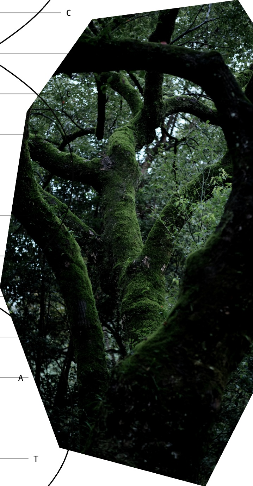

Biology / Environmental Science / Plant Immunity
Decoding How Plants Defend Life
Student researcher investigating the molecular systems plants use to sense danger, communicate stress, and survive.
Subject: Sean Kyoung / ISM 2026
Enter Research01 / About
The Subject
03 / About ISM
The Program
04 / Blog
The Log
05 / Research
The Protocol
How do plants, which cannot run and have no immune cells, sense danger, communicate stress, and survive?
Sensing danger
Receptor proteins on the surface of plant cells recognise molecules that microbes cannot easily change, such as fragments of bacterial flagellin, along with debris from the plant's own damaged cells. Inside the cell, a second set of receptors (NLR proteins) watches for the effector proteins that pathogens inject to shut the first layer down.
Communicating stress
Within minutes of detection, calcium floods into the cell, reactive oxygen species are released, and kinase cascades relay the alarm to the nucleus. Hormones including salicylic acid, jasmonic acid and ethylene tune the response to the kind of attacker, and mobile signals carry the warning to leaves that have not been attacked yet.
Surviving the attack
The plant closes its stomata, reinforces cell walls with callose, and produces antimicrobial compounds and defense proteins. Where a pathogen gets through, cells at the infection site can die on purpose to wall it off. Afterwards the whole plant stays primed and responds faster to the next attack, a state called systemic acquired resistance.
Background summary of plant immunity. Your own question and findings go below.
Research question
Method
Findings
Sources
06 / Mentor
The Mentor
07 / Projects
The Specimens
No projects under this filter yet.